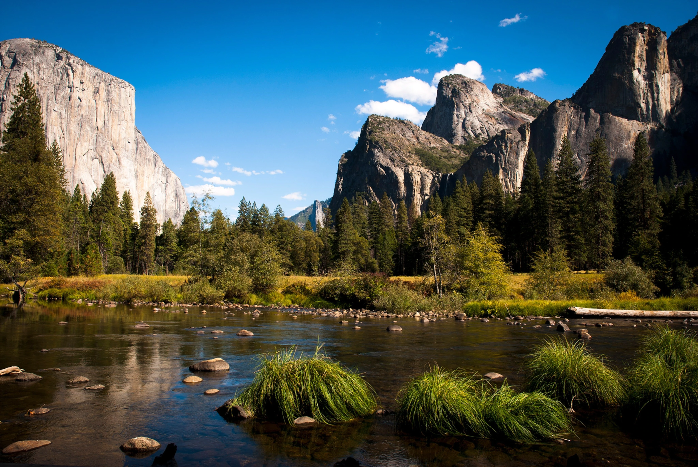
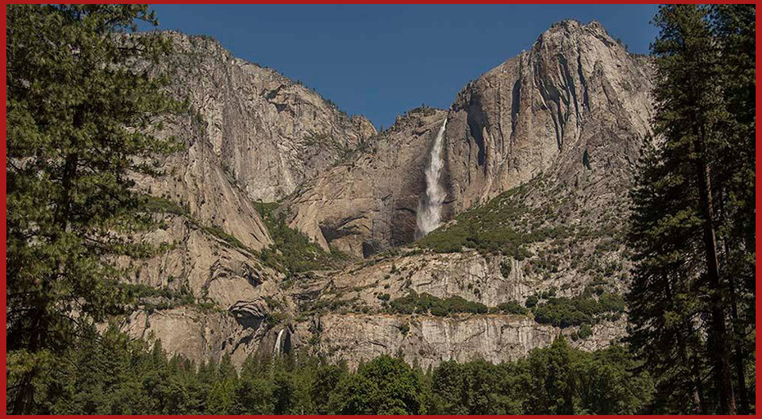

United States National Parks

Yosemite is filled to the brim with natural wonders worth writing home about. Travel experts and visitors agree that your to-do list must include the following: Half Dome, Glacier Point and Mariposa Grove. Hikers, follow the masses along the John Muir Trail and the Mist Trail, but also escape and make the trek to Tuolumne Meadows, an area which features a treasure trove of under-visited trails.
-usnews.com
